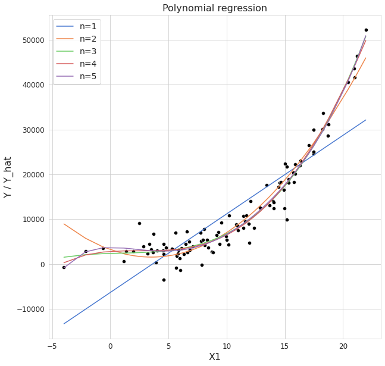
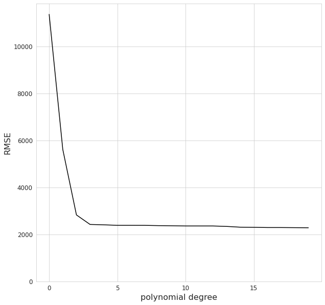
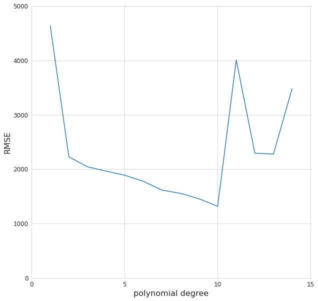
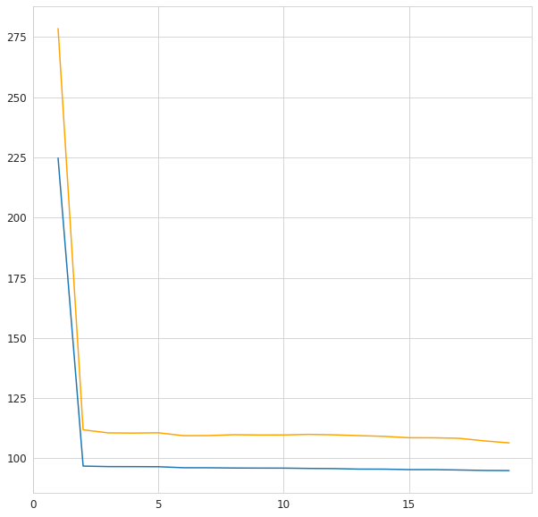
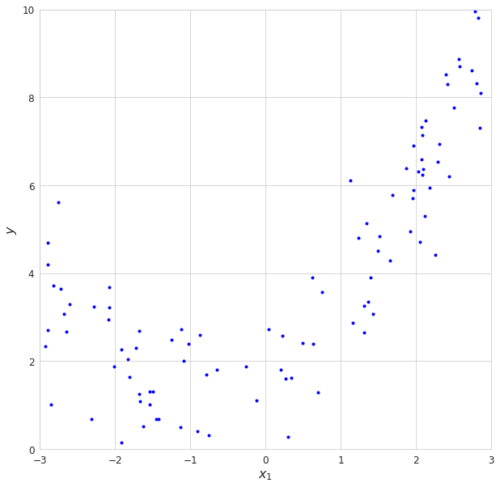
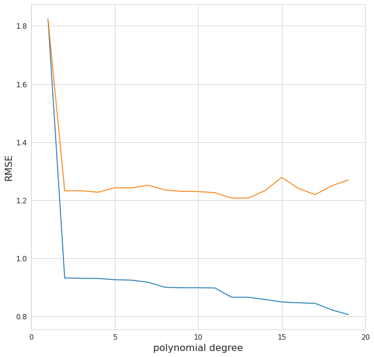

Complexity and flexibility¶
Polynomial regression¶
from dataclasses import dataclass
import numpy as np
from numpy.polynomial import Polynomial
from numpy.polynomial.polynomial import polyfit, polyval
import pandas as pd
from sklearn.preprocessing import PolynomialFeatures, StandardScaler
from sklearn.pipeline import Pipeline
from sklearn.model_selection import train_test_split
from sklearn.linear_model import LinearRegression
from sklearn.metrics import mean_squared_error, r2_score
import statsmodels.formula.api as smf
import matplotlib.pyplot as plt
import seaborn as sns
# nice plots
sns.set_style("whitegrid")
plt.rc('legend', fontsize=14)
plt.rc('axes', labelsize=16, titlesize=16)
plt.rc('xtick', labelsize=12)
plt.rc('ytick', labelsize=12)
# need to run cell twice for this to take effect (don't know why)
plt.rcParams['figure.figsize'] = (10, 10)
# set random seed for reproducibility
np.random.seed(123)
@dataclass
class PolyModel:
"""Polynomial regression model parameters"""
degree: int
coef: np.ndarray=None
Y_hat: np.ndarray=None
rmse: float=None
def fit_polynomial_models(X, Y, degree=20):
"""Function for fitting polynomial models up to degree=degree at once"""
models = []
for n in range(0, degree):
model = PolyModel(n)
model.coef = polyfit(X, Y, deg=n)
model.Y_hat = polyval(X, model.coef)
model.rmse = np.sqrt(mean_squared_error(Y, model.Y_hat))
models.append(model)
return(models)
# generate data with noise
X1 = np.random.normal(loc=10, scale=5, size=100)
e1 = np.random.normal(loc=0, scale=2500, size=100)
Y1 = (2530 + 20*X1 - 10*(X1**2) + 5*(X1**3) + e1)
# create models
models = fit_polynomial_models(X1, Y1)
# n = 3
# coef = polyfit(X1, Y1, deg=n) # fit polynomial of degree n
# print(coef)
# print(Y1[0], polyval(Y1[0], coef, tensor=False))
# Y_hat = polyval(X1, coef) # predict values
# rmse = np.sqrt(mean_squared_error(Y1, Y_hat))
# rmse
g = sns.scatterplot(x=X1, y=Y1, color='black')
g.set_title('Polynomial regression')
g.set_xlabel('X1')
g.set_ylabel('Y / Y_hat')
for n, color in enumerate(sns.color_palette('muted', 5)):
sns.lineplot(x=X1, y=models[n+1].Y_hat, ax=g.axes, label=f"n={n+1}", color=color)

# plot errors for all models
g = sns.lineplot(x=[model.degree for model in models], y=[model.rmse for model in models], color='black');
g.set(ylim=(0,None))
g.set_xticks(np.arange(0,20,5))
g.set_xlabel('polynomial degree')
g.set_ylabel('RMSE');

Adding random input¶
# Create 7 input features X1, ... X7
X = np.hstack([np.random.normal(loc=10, scale=5, size=100).reshape(-1, 1) for n in range(0, 7)])
# But we only have a model with X[:,0]
e = np.random.normal(loc=0, scale=2500, size=100)
Y = (2530 + 20*X[:,0] - 10*(X[:,0]**2) + 5*(X[:,0]**3) + e).reshape(-1, 1)
# Create 7 input features X1, ... X7
X = pd.DataFrame({f"X{i}": np.random.normal(loc=10, scale=5, size=100) for i in range(1, 8)})
# But we only have a model with X[:,0]
e = np.random.normal(loc=0, scale=2500, size=100)
Y = (2530 + 20*X.X1 - 10*(X.X1**2) + 5*(X.X1**3) + e)
df = pd.concat([X, Y], axis=1)
def make_formula(n, X=X.columns):
"""Return patsy formula for polynomial of X with no interaction"""
return " + ".join([" + ".join([f'{Xi}**{i+1}' for i in range(0,n)]) for Xi in X])
silly_models = []
for n in range(1, 15):
model = PolyModel(degree=n)
formula = make_formula(n) # polynomials with no interactions
poly = smf.ols(formula="Y ~" + formula, data=df).fit()
model.Y_hat = poly.predict(df)
model.rmse = np.sqrt(mean_squared_error(Y, model.Y_hat))
silly_models.append(model)
# plot errors for all models
g = sns.lineplot(x=[model.degree for model in silly_models], y=[model.rmse for model in silly_models]);
g.set_xlabel('polynomial degree')
g.set_ylabel('RMSE');
g.set_xticks(np.arange(0,20,5));
g.axis([0,15,0,5000]);

def make_polynomial(X, degree):
"""Turn np.ndarray X into polynomial with no interaction."""
if degree > 0:
return np.hstack([X**(i+1) for i in range(0,degree)])
else:
pass
silly_models = []
for n in range(1, 15):
model = PolyModel(degree=n)
model.X_poly = make_polynomial(X, degree=n) # polynomials with no interactions
model.lm = LinearRegression().fit(model.X_poly, Y)
model.Y_hat = model.lm.predict(model.X_poly)
model.rmse = np.sqrt(mean_squared_error(Y, model.Y_hat))
silly_models.append(model)
# plot errors for all models
g = sns.lineplot(x=[model.degree for model in silly_models], y=[model.rmse for model in silly_models]);
g.set_xlabel('polynomial degree')
g.set_ylabel('RMSE');
g.set_xticks(np.arange(0,20,5));
g.axis([0,15,0,5000]);

Train-test split¶
Using np.polyfit¶
# Same data generation as before, but now with train-test split
np.random.seed(1973)
X4 = np.random.normal(-10, 6, 250)
e4 = np.random.normal(0, 100, 250)
Y4 = 25 + 2*X4 - 4*(X4**2) + e4
X4_train = X4[0:200]
X4_test = X4[200:]
e4_train = e4[0:200]
e4_test = e4[200:]
Y4_train = 25 + 2*X4_train - 4*(X4_train**2) + e4_train
Y4_test = 25 + 2*X4_test - 4*(X4_test**2) + e4_test
degree, rmse_train, rmse_test = [], [], []
for i in range(1,20):
c = np.polyfit(X4, Y4, i)
y_hat = np.polyval(c, X4)
y_test_hat = np.polyval(c, X4_test)
degree.append(i)
rmse_train.append(np.sqrt(np.mean((Y4 - y_hat)**2)))
rmse_test.append(np.sqrt(np.mean((Y4_test - y_test_hat)**2)))
g = sns.lineplot(x=degree, y=rmse_train)
sns.lineplot(x=degree, y=rmse_test, color='orange')
g.set_xticks(np.arange(0,20,5));

Usign sklearn without standard scaling¶
# using sklearn like before
raw_models = fit_polynomial_models(X4_train, Y4_train)
g = sns.scatterplot(x=X4_train, y=Y4_train)
g.set_title('Generated data with high correlation');
g.set_xlabel('X4')
g.set_ylabel('Y4')
sns.scatterplot(x=X4_test, y=Y4_test, color='red')
for n, color in zip([1,2,5,10,15], sns.color_palette('muted')):
sns.lineplot(x=X4_train, y=raw_models[n+1].Y_hat, ax=g.axes, label=f"n={n+1}", color=color)

# calculate errors for validation data
raw_validation = []
for model in raw_models:
X4_poly = PolynomialFeatures(model.degree).fit_transform(X4_test.reshape(-1, 1))
Y_hat = model.lm.predict(X4_poly)
raw_validation.append(np.sqrt(mean_squared_error(Y4_test, Y_hat)))
g = sns.lineplot(x=[model.degree for model in raw_models], y=[model.rmse for model in raw_models]);
sns.lineplot(x=range(1,21), y=raw_validation)
g.set_xticks(np.arange(0,25,5))
g.set_xlabel('polynomial degree')
g.set_ylabel('RMSE');
---------------------------------------------------------------------------
AttributeError Traceback (most recent call last)
/tmp/ipykernel_4124/3884864231.py in <module>
3 for model in raw_models:
4 X4_poly = PolynomialFeatures(model.degree).fit_transform(X4_test.reshape(-1, 1))
----> 5 Y_hat = model.lm.predict(X4_poly)
6 raw_validation.append(np.sqrt(mean_squared_error(Y4_test, Y_hat)))
7
AttributeError: 'PolyModel' object has no attribute 'lm'
Usign sklearn with standard scaling¶
# generate data
m = 100
X5 = 6 * np.random.rand(m, 1) - 3
y5 = 0.5 * X5**2 + X5 + 2 + np.random.randn(m, 1)
plt.plot(X5, y5, "b.")
plt.xlabel("$x_1$")
plt.ylabel("$y$")
plt.axis([-3, 3, 0, 10]);

# train-test-slit in sklearn
X5_train, X5_test, y5_train, y5_test = train_test_split(X5, y5, test_size=0.3, random_state=42)
# for plotting
# X_new=np.linspace(-3, 3, 100).reshape(100, 1)
scaled_models = []
for degree in range(1,20):
model = PolyModel(degree)
polybig_features = PolynomialFeatures(degree=degree, include_bias=False)
std_scaler = StandardScaler()
lin_reg = LinearRegression()
model.pipeline = Pipeline([
("poly_features", polybig_features),
("std_scaler", std_scaler),
("lin_reg", lin_reg),
])
model.pipeline.fit(X5_train, y5_train)
model.Y_hat = model.pipeline.predict(X5_train)
model.rmse = np.sqrt(mean_squared_error(y5_train, model.Y_hat))
scaled_models.append(model)
# plt.plot(X_new, model.Y_hat, style, label=str(degree), linewidth=width)
# calculate errors for validation data
scaled_validation = []
for model in scaled_models:
y5_test_hat = model.pipeline.predict(X5_test)
scaled_validation.append(np.sqrt(mean_squared_error(y5_test, y5_test_hat)))
g = sns.lineplot(x=[model.degree for model in scaled_models], y=[model.rmse for model in scaled_models]);
sns.lineplot(x=range(1,20), y=scaled_validation)
g.set_xticks(np.arange(0,25,5))
g.set_xlabel('polynomial degree')
g.set_ylabel('RMSE');

![Created in deepnote.com]() Created in Deepnote
Created in Deepnote